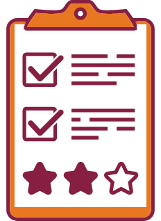

Goals
- Analyze the rhetorical situation and determine the appropriate audience or users of written communication, considering the needs of global audiences and people with disabilities. [CLO 1]
- Conduct research appropriate to workplace problem solving, such as literature review, evaluation of online resources, interview, and site inspection. [CLO 2]
- Interpret research findings with understanding of ethical and human implications. [CLO 3]
- Use conventions of various workplace genres, such as proposals, instructions, correspondence, reports, and slide decks, with understanding of how the genre conventions can be used as heuristics and as principles of arrangement. [CLO 4]
- Collaborate with classmates in planning, researching, writing, revising, and presenting information. [CLO 5]
- Apply principles of effective visual design for print and electronic presentation, including hierarchical, chronological, and spatial arrangements. [CLO 6]
- Identify and apply the principles of effective style in the composing of usable, reader-centered written communications. [CLO 7]
The Task
The final exam in this course is optional. If you are happy with your current course grade, you need not submit a final.
Note: there is no grace period for the exam. If you do not submit your exam by 11:59 PM on Wednesday, May 12, you will earn zero points for the activity.
What I Want You to Do
Complete a performance review form that provides an evaluation of your work in the course and proposes the grade you should receive on the final. Use details and examples from your work logs and writing activities to support your argument..
Why I Want You to Do It
You will write performance evaluations in the workplace, both to assess your own work and to assess the work of colleagues. The final exam gives you the chance to learn about this type of writing while also evaluating your work in this course. The final exam gives you the chance to demonstrate your productivity and accomplishments in the course, using your best persuasive abilities to argue your case.
Where You Can Find Help
- Markel & Selber, Chapter 8, “Communicating Persuasively”:
- Webpages:
How You Do It
- Use the Final Exam Preparation page to gather evidence of your work in the course. You need specific details to support the grade you propose for the final.
- Download the Final Exam: Performance Review Form.
- Add your responses to the questions in the form in your word processor, following these guidelines:
- Do not change the wording or format of the headings or questions in the form in any way. [I set the questions as a maroon font and your reponses as a black font to make the answers easier for me to find quickly.]
- Do not change the organization of the questions on the form.
- Add as much space as you need for your answers to the questions.
- Include graphs, charts, and other visual elements that support your argument, if you desire.
- Check your work against these expectations for the final exam. Your performance review should
- Answer all of the questions clearly and honestly.
- Be specific and detailed, since I will go by the information you provide as I determine your final exam grade. If you do not provide adequate, specific details, your grade will be lower.
- Use layout and design to make your responses clear and easy to read.
- Specifically state how many points the final exam should add to your course grade (maximum: 40 points). Explain how you arrived at your number.
- Review your exam to ensure that I will understand your self-assessment.
- Upload your completed final in Canvas by 11:59 PM on Wednesday, May 12. There is no grace period for the exam.
Obtaining the Points for Your Work
- I will read your final, looking for evidence that supports your argument for a specific number of additional points.
- If necessary, I will adjust the number to better represent your work in the course. In such cases, I will add a comment the explains my decision.